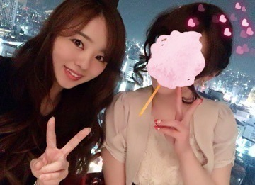
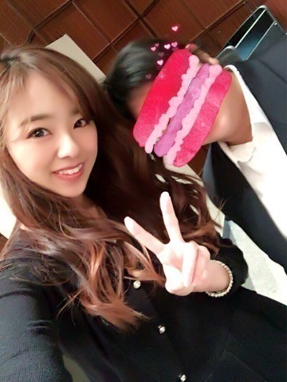
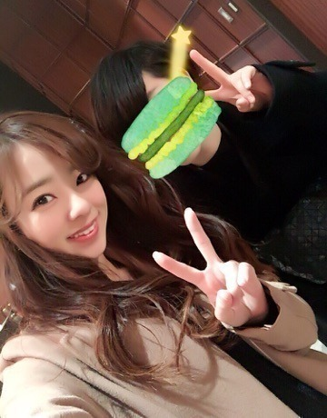
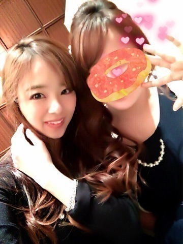

お疲れ様です( ´ 3 ` )♡
川村まひろです.＊

前回は成人おめでとうコメントや応援メッセージありがとうございます.＊
全て読ませて頂きました.＊ぇへへ
そしてそして私の成人式は1月11日でした♡ 握手会の次の日ですねぇ．
もちろん！ ちゃんと地元に帰りましたよ？
でもですね，成人式には行きませんでした^ ^
周りの人に「何で行かないの！行きなよ！！人生に一度の成人式だよ！！？？」って
耳にタコができる位言われたのですが...笑笑 1人でまったぁ～り過ごしていました^ ^♡わら
いいじゃんね？
そんなの自由だもぉ～ん♡♡ぇへへ
でもね？お友達から二次会のお誘いがあったから行ってきましたぁ(#^.^#)
本当に皆に会うのが4年半以上？
もぅ久々過ぎて、、、
この幼馴染の絡みというか，ボケツッコミのいじり合う感じとかが懐かしくて，頬やましくて... 何だか幸せな時間でした.＊
私が上京してからもずっと私の事を応援してくれているお友達も沢山いますし，やっぱり幼馴染は私の事を分かってくれてるし，一緒に居て落ち着きますね^ ^♡♡
写真はりまぁ～～す！
完全なるアニメオタクYちゃん。

ほんまにめちゃめちゃ仲良かったRちゃん。

二次会でも皆にいじられ愛されているSちゃん。

また皆に会いたいなぁ～...
楽しんできましたぁ～^ ^
はい♡そして話変わるんですけど...
最近のはまっていること。。
『入浴剤♡』にはまっているんです！！！*\(^o^)/*
色んな香りの入浴剤を買っちゃいます♡
また写真も載せたいなぁと思います‼︎
オススメの入浴剤とかありますかねぇ？？
入浴剤ってめっちゃラブリーだったりもするから、購入する際に「プレゼント用ですか？」って聞かれるんだよね、、、笑
「ぃゃ、自宅用です。。」って答えるよね^ ^ノ ぁはは
後ねぇ～，これはblogでもモバメでも755でも公表したことないだけど...
可愛い下着が大好きなんです。。
洋服とかは大人かっこいい感じのものだったりするから，その分下着はめっちゃラブリーなものばかり...♡♡♡
意外って言われるんだけど，沢山フリルのついた物とかキラキラしてるものとか大好きっっ(｡-_-｡)♡♡♡
もちろんお仕事の時に衣装に差し支えある場合はシンプルなのも使いますけどね。。♡
ってな感じで今日の所は終わろうかなぁ。
んな，また更新しますねぇ？
blog見てくれてありがとう♡
川村まひろでした...
ぁ，私も乃木坂工事中でメンバーのモノマネしたかったー(｡-_-｡)(｡-_-｡)ノ笑
ほんまに面白すぎた♡ぁはは